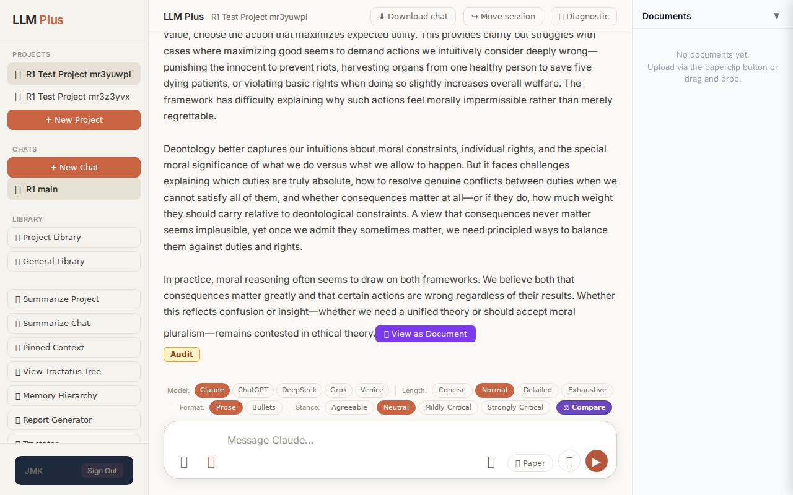

Function 2 — Projects list
Confirm sidebar project count equals GET /api/projects count
R1 approach: navigation
R1 reasoning: Reconcile UI render with backend list
R1 input (verbatim):
App page text after:
LLM Plus PROJECTS 📁 R1 Test Project mr3yuwpl 📁 R1 Test Project mr3z3yvx + New Project CHATS + New Chat 💬 R1 main LIBRARY 📂 Project Library 📚 General Library 📝 Summarize Project 📄 Summarize Chat 📌 Pinned Context 🌳 View Tractatus Tree 🧠 Memory Hierarchy 📜 Report Generator 🔮 Tractator 👤 Profile Me 📌 Reminders JMK Sign Out LLM Plus R1 Test Project mr3yuwpl ⬇ Download chat ↪ Move session 🧪 Diagnostic What are the epistemological implications of treating mathematical objects as discovered rather than invented, and how does this relate to the unreasonable effectiveness of mathematics in physics? Claude 📋 The discovery versus invention debate in the philosophy of mathematics strikes at fundamental questions about the relationship between mind and reality, and the puzzle of mathematics' physical applicability sharpens this debate considerably. If mathematical objects are discovered rather than invented, we embrace mathematical Platonism—the view that mathematical entities exist independently of human minds in some abstract realm. On this view, when mathematicians prove theorems about prime numbers or complex manifolds, they uncover truths about entities that would exist even if no conscious beings had ever evolved. The epistemological implications are profound and troubling. How do physical, causally-isolated minds gain knowledge of abstract, acausal objects? This is the classic access problem. We can see trees because photons bounce off them into our eyes, but no analogous causal story explains our knowledge of the number seven or the Mandelbrot set. Platonists must posit some special faculty of mathematical intuition or accept that our best mathematical beliefs are merely reliably formed without being causally connected to their objects—a position that sits uncomfortably with naturalistic epistemology. The discovery view does, however, offer an elegant explanation for Eugene Wigner's famous puzzle about the "unreasonable effectiveness of mathematics in the natural sciences." If mathematical structures exist independently and physical reality is somehow structured mathematically—or even is a mathematical structure, as Max Tegmark's mathematical universe hypothesis suggests—then of course our mathematical discoveries apply to physics. We're discovering the deep grammar of reality itself. The mathematician and the physicist study the same abstract structures from different angles. This explains not just that mathematics works in physics, but that obscure, purely abstract mathematics developed for its own sake (like Riemannian geometry or group theory) later turns out to describe physical phenomena (general relativity and particle physics, respectively). The Platonist can say: mathematicians stumbled upon these structures early because they exist necessarily; physicists found them later because contingent physical reality instantiates them. If instead we treat mathematics as invented—a human construction, perhaps constrained by cognitive
Network calls
| method | path | status | ms | response excerpt |
|---|
SSE events observed (0)
(none)
INVARIANT VIOLATIONS
- Expected route GET /api/projects not called
- No streaming events captured (sse_events array empty)
- tractatus_delta is null, violating streaming coherence requirement
Judge concerns
- No network_calls array entries despite GET /api/projects being declared as expected
- Response excerpt contains only UI shell and chat content, no project count validation performed
- Missing streaming events or tractatus_delta that would document the comparison reasoning
Judge critique
The test sought to validate sidebar project count against the API, yet no network call to GET /api/projects was captured despite being listed as expected. The response excerpt shows UI chrome and chat content but provides no evidence of comparison logic or project enumeration. Without the API response or streaming thought process, it's impossible to verify the count match claim.
Screenshots

